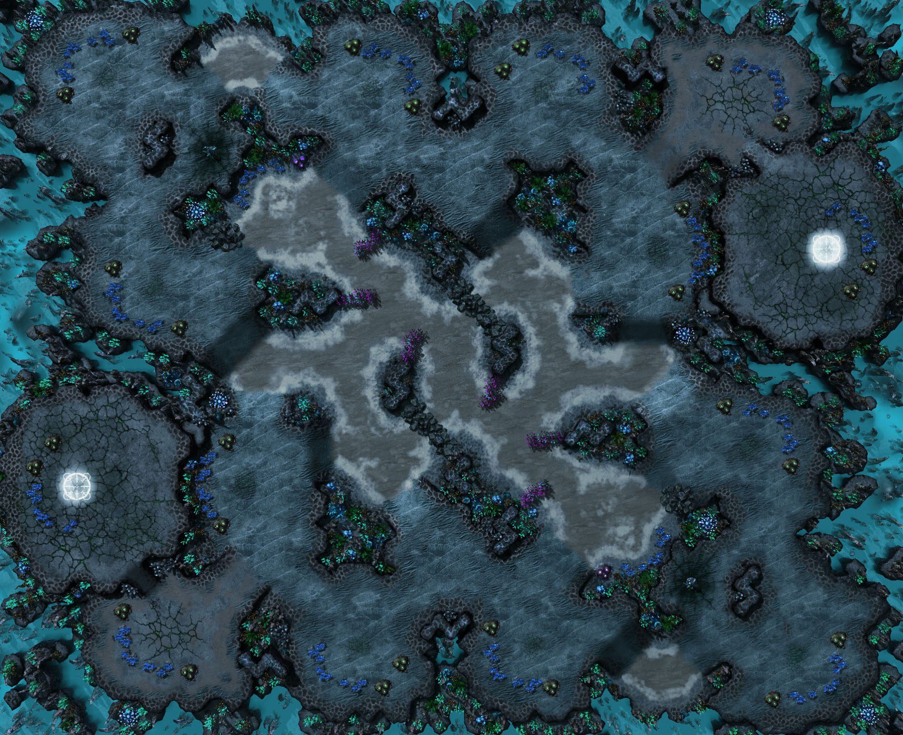
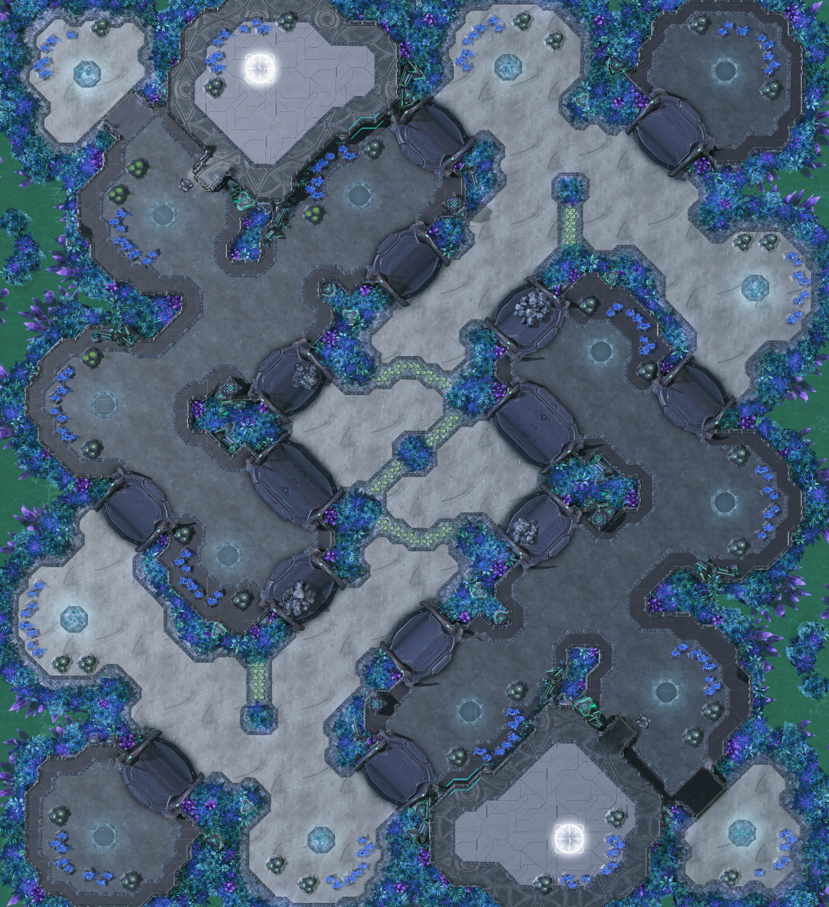
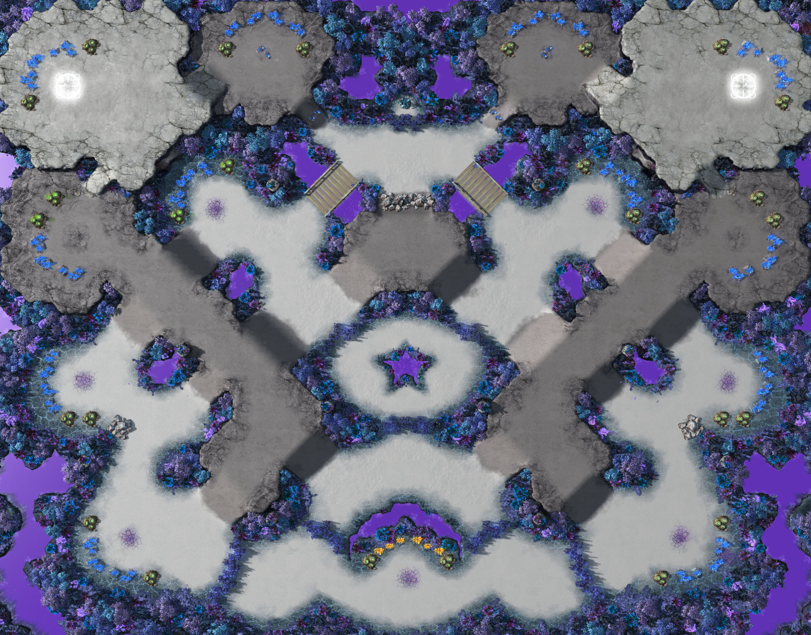
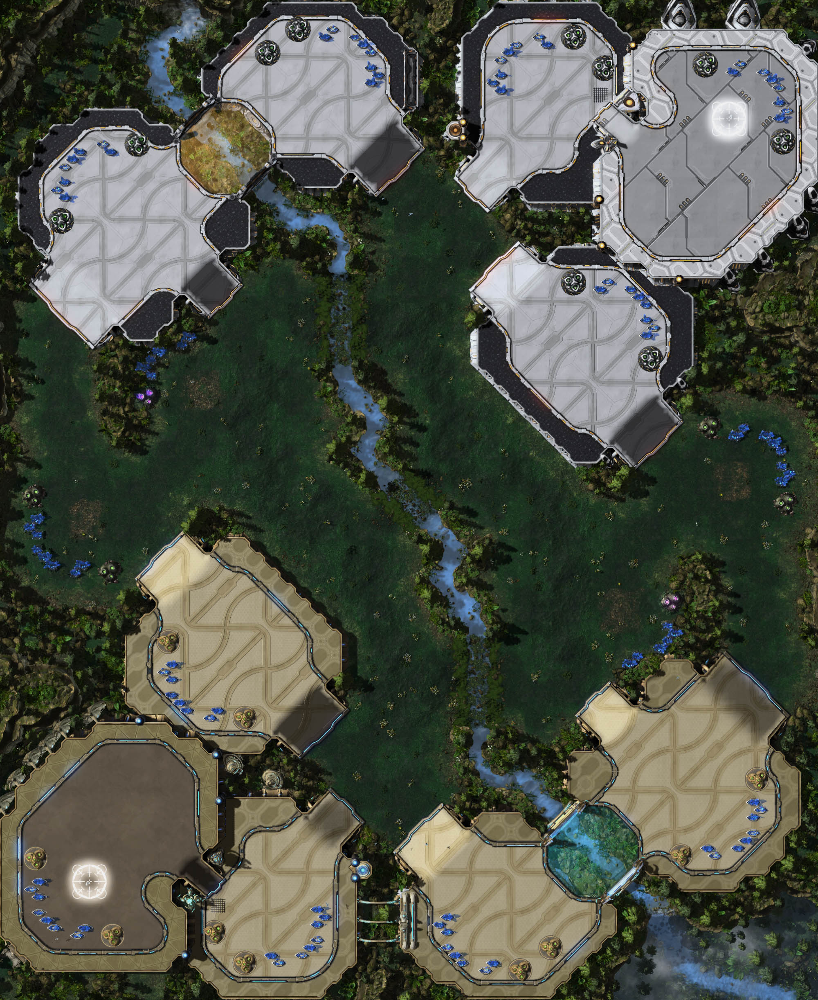

<!-- Jakub Polacek -->
<!--   D00260171   -->
<!--   GD1b 2022   -->

<DOCTYPE!html>
<html lang="UTF-8">

<head>
  <title>StarCraft II maps - maps</title>
  <!--Link to stylesheet and javascript.
      I am using the same base styling in all 3 pages for better clarity
	  few small changes in elements, that aren't necessary to be done in stylesheet are done with inline css next to the tag
	  Index and content page use the same js, while contacts have their own-->
  <link rel="stylesheet" type="text/css" href="css/StarCraft II maps.css">
  <script src="js/ContentScript.js"></script>   
  <meta charset="UTF-8">
</head>


<!--Calls the function from js file-->
<body onload="jumpLoad()">

  <!-- This navigation bar is same for all 3 pages. Contains links to other pages and official website.-->
  <nav class="nava">
    <a href="https://starcraft2.com">  </a>
	
    <a href="index.html"> &nbsp HOME &nbsp </a>
	  &nbsp &nbsp
    <a href="content.html"> &nbsp MAPS &nbsp </a>
	  &nbsp &nbsp 
	<a href="contacts.html"> &nbsp CONTACTS &nbsp </a>
  </nav>
  
  
  <!-- The header serves only as a splitting factor. It doesn't have any function and the website would look the same without it.-->
  <header>
    <h1>2022 Season 3</h1>
  </header>
  
  
  <!-- In the main is all the content unique for this page-->
  <main>

	 <!-- The images for icons and maps are the same
	 image sources:
	 https://liquipedia.net/starcraft2/File:Cosmic_Sapphire.jpeg
	 https://liquipedia.net/starcraft2/File:Data-C.jpeg
	 https://liquipedia.net/starcraft2/File:Inside_and_Out.jpg
	 https://liquipedia.net/starcraft2/File:Moondance.jpeg
	 https://liquipedia.net/starcraft2/File:Stargazers.jpeg
	 https://liquipedia.net/starcraft2/File:Stargazers.jpg
	 https://liquipedia.net/starcraft2/File:Waterfall.jpeg
	 
	 The files originate from a shared repository owned by Blizzard and may be used by other projects
	 The image didn't need any changes, but I resized them in the stylesheet to fit them better into website-->
	  <div class="mapicon">
	    
	    
	    
	    
	    
	    
	    
	  </div>
	  
	  
	<!--Only placeholders for styling. Content will be always changed on the page load.--> 
	<div class="map">
      <h2 id="mapName"></h2>
	
	  

	  <p id="mapIntro">
	  </p>
	
	  <p id="mapInfo">
	  </p>
	  
	</div>
	
	
  </main>


  <!-- Footer is for changing the background color and formating the text.-->
  <footer>
    <p>Jakub Polacek 2022</p>  
  </footer>


</body>

</html>